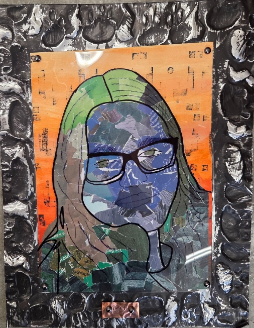

I really liked making this, the conture line was a little rough with my shaky hands, but I think it turned out good, I thought lineweight where my glasses and down by where my hoodie collar is was good, I like the kind of rustic look my repousse boarder gives, and the value of my hair where it states off light and goes darker, I chose my colors for a variety of reasons, I love the color green and the color blue was right next to it, but also because I have red hair and red and green are oposites, it seemed fitting, as well as I am still blue even after three and a half years from my grandpa passing. I also chose green because his favorite color was John Deer green.